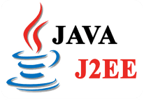

Créer une page web avec du HTML / CSS
Vladislaw de PONTAC, le 07 octobre 2022
Php │ Java │ C++ │ Html │ Python │ Ruby │ Cobol

La fondation Eclipse a laquelle Oracle vient de céder la propriété intellectuelles de Java EE, a fait part des prochains changements qu'elle apportera à la gestion de la spécification destinée aux applications de l'entreprise. En premier lieu, Oracle va passer les kits de compatibilité technologique Java EE (TCK), qui permettent de vérifier qu'une implémentation est conforme à Java, en open source. Un changement qualifié de "tout a fait fondamental dans la dynamique de l'écosystème" par Mike Milinkovich, le directeur éxécutif de la fondation Elipse. La disponibilité des TCK en open source permettra aux utilisateurs de tester eux même la conformité sans passer par le "modèle pay-to-pay" comme l'appelle le directeur éxécutif.
"Les TCK permettaient à Oracle d'exercer un contrôle sur l'écosystème Java EE", a t'il déclaré. "Des TCK open source devraient, ésperons le, amener d'autres fournisseurs à la table de Java EE pour créer des implémentations", a ajouté Mike Milinkovich
La sortie de PHP 7.2 est prévue pour fin novembre. Cette version, actuellement en beta (ou RC2, ndlr), va introduire beaucoup de nouveautés. Parmi les plus importantes, on note notamment l'ajout de la librairie de sécurité libsodium. Elle apporte une nouvelle couche pour gérer le hash des mot de passe et le chiffrement de données. Avec PHP 7.2, certaines fonctionnalités du langage vont également être dépréciées, et donc renvoyer des messages d'erreur pour prévenir qu'elles seront retirées des prochaines versions. L'idée est de préparer le terrain en vue de la sortie de PHP 8 prévue d'ici 3 ans. La France est très impliquée dans le lancement de PHP 7.2. Le deux release managers de cette version sont le français Rémi Collet et Sara Golemon, ex développeuse de Facebook qui travaille désormais pour le cloud françcais Platform.sh.
| Partenaires | Mots clés | Copyright |
|---|---|---|
| Site du Zéro | Java J2EE PHP MJML | © 2022 jean-rostand.com Site |
| Graphikart | C# C++ C | Développé en html et css. |
| Open Class Room | PHP HTML CSS |